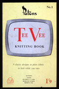

Women's
Casual TV Outfits
by Derham Groves
For about a decade after its introduction in 1956 Australians were in awe of television. Yet, by 1966, it had ceased to be a novelty. During this 'honeymoon,' many people dreamed of a home that was centered around the TV set. This led to TV rooms, TV furniture, TV food - even TV clothes. Only a month after television officially started in Australia, the author of Accent on Design for TV Viewing observed: "TV is having far reaching effects already. Special fashions have been designed for TV viewing so that the acme of comfort can be enjoyed while you relax in a specially designed TV chair and eat a TV meal from a TV tray." 1
Accent on Design for TV Viewing featured two women's casual TV outfits by Australian fashion designer Dena of Leroy that were described "as up to the minute as TV itself.2 One, designed "for TV viewing at home on hot summer evenings,3 was comprised of a red and black polka-dot tunic and matching short shorts. The other was "smart and comfortable for a TV party.4 It consisted of a "little boy shirt" with three-quarter sleeves and "matador pants" below the knees.5 Both TV outfits were made from non-crushable fabric, because "televiewers are likely to spend hours curled in a chair or sitting on the floor.6 They also had "particularly interesting back necklines [...] because the back of a [TV] viewer will be seen by others.7 This happened whenever it was necessary to arrange the chairs in rows, as at a cinema, to accommodate everyone who wanted to watch television.
Formal TV Dresses
Television also influenced women's formal dresses, a trend that spread
to Australia from overseas. Four years before the introduction of television
in Australia, the author of the 1952 article Now -- TV Dresses: Designers
Are on the "Beam" wrote: "World famous designers are
making clothes specially for 'TV evenings,' and even though Australian
women haven't got television to keep them at home in the evenings, a whole
new style of home entertaining has led to a new field of fashion --Evenings-at-Home
clothes.8
This article featured two TV dresses by French fashion designer Jacques Heim, who was famous for helping to introduce the bikini. One consisted of a full-length black-and-white velvet dress with three-quarter sleeves. A taffeta apron with a deep side pocket was worn over this dress to protect it when TV snacks were being served. The other TV dress had a decollate bodice with long sleeves, a full-length faille skirt split to the waist, and knee-length satin "TV bloomers.9 It was futuristic in style, looking remarkably like the dress worn by space-age teenager Judy Jetson in the 1962 TV cartoon series, The Jetsons. Shortly before television started in Melbourne, Woman's Day fashion editor Isobel Kennedy presented a selection of formal dresses by Australian fashion designer Stell-Ricks and hats by Australian milliner Noisette. According to Kennedy, these clothes were "as new to the scene as the TV camera.10 In fact, the clothing's connection to the newness of television was increased by being photographed in front of the "partly-built main [TV] studio at [channel] H.S.V. 7"11 in Melbourne.
In 1956, Furs Renée of Melbourne introduced women's waist-length coats with three-quarter sleeves in either mole skin or suede which were "specially designed for televiewing.12 The short sleeve-length was explained as more practical in order "to simplify the hostess' duties of serving food during TV shows.13
A Woman's Work Is Never Done
Three-quarter sleeves were a common feature of women's TV clothes. For
example, among the clothes mentioned so far, the "little boy shirt"
by Dena of Leroy, the black-and-white "television dress" by
Jacques Heim, and the "TV jackets" by Furs Renée all
had three-quarter sleeves. It was claimed that three-quarter sleeves simplified
serving TV snacks, but was there more to them than simply that?
|  |
|
Fig 1: TV knitting: Patons
Tee Vee Knitting Book No.1 (Melbourne: Patons and Baldwins (Australia)
Limited, n.d.).
|
Many Australians with a protestant work ethic felt guilty about watching television. According to the architectural historian Witold Rybczynski one of the main tenets of the protestant work ethic is that "leisure without toil, or disconnected from it, is altogether sinister.14 Therefore, to stop feeling guilty these people had to reconcile watching television with doing work. For example, special TV knitting pattern books were published (Fig 1). Women's TV clothes with three-quarter sleeves was another way of reconciling this dilemma since three-quarter sleeves are a stylish form of rolled-up sleeves. And, rolled-up sleeves are a deep-seated symbol of work which meant that women"s TV clothes with three-quarter sleeves were also work clothes - at least symbolically. This may also have been the 'true' reason behind the apron worn over Jacques Heim included with his TV dress. Before television, most women who were able to afford French-designer clothes probably would not have even considered wearing an apron while entertaining guests.
Female TV Stars
Women's fashion was also influenced by what female TV stars wore on television.
For example, during the 1962 Christmas season, the author of I Want
a Stethoscope for Christmas: TV Fads Take Over at the Gift Counter
reported: "Appearing in American stores at the present time are copies
of dresses worn in a TV wedding shown in the Father of the Bride series.15
A leading U.S. merchandiser of women's clothes also explained in this
article: "It's natural that when a woman goes shopping she will always
reach for something bearing the name of her favorite, in preference to
similar products that haven't been tied-in with a popular TV identity
or show.16
Many Australian women also wanted to dress like their favorite female TV stars. In 1961, the Australian weekly magazine, Woman's Day with Woman, offered sewing patterns for dresses worn by Panda Lisner, a performer on In Melbourne Tonight, a variety show on the local Melbourne channel GTV 9, and Del Cartwright, the host of Your Home, a home-making program on Sydney's ATN 7. The magazine claimed: "Using our special pattern offer you can copy these TV stars" dresses for [4 shillings and 6 pence or 45 cents] each.17 Apparently, it was not only easy to dress like a glamorous TV star, but it was inexpensive as well!
The clothing of Lisner and Cartwright was probably chosen because they appealed to a variety of women. For one thing, Lisner lived in Melbourne and Cartwright came from Sydney. For another, although both were popular and pretty, Lisner was a 'dumb blonde' (or at least she pretended to be), while Cartwright was an expert cook and dressmaker. These differences offered the potential of reaching different markets in different cities.
Daytime TV
Some daytime TV shows included dressmaking demonstrations. New York sewing
expert Lucille Rivers toured Australia in 1959 and 1961 demonstrating
dressmaking at shopping centers and on television. She explained in the
1959 article Practical Dressmaker that: "Television is a wonderful
medium for sewing demonstrations, because all the time you have a close-up
view of what I'm doing.18 However, TV dressmaking demonstrations
were often confusing, because they were seldom carried out in 'real time.'
For example, Rivers always made the various stages of a dress off camera
"so that she doesn't waste TV time by sewing it all on camera.19
Some daytime TV shows also encouraged women to be fashion-conscious. For example, A Woman with More Taste than Money hosted by Sydney model Libby Mendelsohn on A.T.N. 7 was "designed to show how girls can dress well with economy.20 Mendelsohn worked variety into her show to attract repeat viewers: "Libby takes different themes for her program. Always emphasizing ways to attain the greatest variety in clothes and accessories at minimum costs, Libby shows what to wear on various occasions - at a picnic, at the races, on the day a girl becomes engaged.21
However, one of the most popular TV shows of this kind was My Fair Lady which was broadcast on the nation-wide Channel 7. Charles Bush, a Melbourne artist, hosted this program. On each show he would tell three women, willingly selected from the studio audience, what he thought of their appearance. Typical of his insulting comments were: "Your hair looks like a bird's nest" and "I never saw a witch in broad daylight before - where did you get that hat?22 At the end of each show, the audience would choose the most 'frumpish' of the three contestants to win prizes, including a new outfit of clothes and a new hairdo. This 'lucky' woman would then reappear on the next show looking 'glamorous' thanks to the prizes she had won. Television shows like Rivers' and Mendelsohn's, and even Bush's, were not only entertaining but also informative. They were another means of reconciling watching television with doing work in the form of personal development.
Women's TV Shoes
The introduction of television in Australia also influenced women's footwear.
In 1956, the Australian shoe manufacturer Knights produced special women's
slippers "for TV hostesses.23 A 1956 advertisement showed
four women all wearing Knights TV slippers and watching television. It
also described these slippers as "glamorous" because they were
"touched with gold" by being "delicately embroidered"
with gold colored tinsel.24 However, almost anything associated
with television was considered to be glamorous in 1956.
In 1957, Australian footwear manufacturer Ralph Grosby introduced 'Televettes,' a new range of women's casual flat-heeled shoes described in an advertisement as "newer than television.25 In this ad a young woman is dancing to the music from a TV set in a pair of Grosby Televettes. These shoes were also suitable to wear at popular TV parties.
The idea of TV shoes may seem strange. Nowadays, most people wish to relax while watching television, so they are more likely to take their shoes off than put them on. In Australia during the late 1950s, however, watching television was largely a social event and getting dressed-up to either entertain guests at home or visit someone else's home was the polite thing to do.
Male TV Stars
In Fashion Plates: TV Shows the Way, 1962, TV Times journalist
Rosemary McAllister interviewed the editor of Tailor and Men's Wear Australasia,
Paul B. Nelson. Nelson was critical of the way some male TV stars dressed,
in particular Johnny O'Keefe, the Australian rock 'n' roll idol and host
of Six O'clock Rock on the national Channel 2.26 According
to Nelson: "Now that [Johnny O'Keefe] has left the lurid stage behind
him, Johnny looks a much better dressed young man. However, he is still
guilty of errors of taste in fashion. I recall that when he last went
to America he took with him a morning suit with striped trousers to wear
at an official reception in New York. A young man should be what he is.
He should not try to dress like some dignitary.27
Yet, Nelson thought that television had generally improved how Australian young men dressed, saying: "Once upon a time, our young fellows made a studied effort to be untidy. Now they are dressing up, wearing well-styled clothes; to such an extent that the "bodgie" has become almost a rarity. Of course, our young men don't wear hats as much as they should. Still, they are vastly better dressed on the whole than they were before television came along.28
Nelson was full of praise for several male TV stars, including Digby Wolfe, the host of Revue '61 and Revue '62, variety shows on Channel 7. According to a rather snobbish Nelson: "Digby dresses very well indeed. He achieves a quiet elegance. You can see it in the way he knots his tie, the way he always shows half an inch of cuff. Of course, he's British, and the British have a way of doing that.29 Wolfe usually wore a black cross-over bow tie and a white shirt with a button-down collar on television and started a fashion trend. In I Want a Stethoscope for Christmas, an executive from a leading Sydney menswear store claimed: "Digby Wolfe's use of the cross-over bow tie and button-down collar in Revue '62 had a lot to do with making these items popular.30
Wolfe's crisp TV appearance benefitted from a technological advantage that he had over other TV stars - at least for a while. Revue '61 was the first Australian TV show to use TV cameras fitted with diopter lenses, which significantly reduced the impact of glare. These lenses enabled Wolfe to wear a black dinner suit and a white shirt on the show. Prior to the use of diopter lenses, TV stars could not wear black and white clothes on television. For example, Bob and Dolly Dyer, the co-hosts of the Pick-A-Box, a quiz show the national Channel 9, could only wear pastel clothes on camera in 1957. As Woman's Day with Woman journalist Fay Patience reported at the time: "Dolly is limited to choosing dresses that are pastel in color and without too much pattern. Black and white or striped dresses are definitely out for television. The same rule applies to Bob. All his suits are in midnight blue shades or greys with pastel shirts and handkerchiefs.31
Graham Kennedy
Another television personality who had a big impact on men's clothing
was Graham Kennedy. He was the witty, sometimes smutty, much loved host
of In Melbourne Tonight, which began in 1957 and ran for 13 years.
He was arguably Australia's biggest TV star. In 1966, the readers of the
Australian weekly television guide, TV Week, voted him 'Australian Television
Personality of the Decade.'32 And, in 2000, the readers of
the Melbourne daily newspaper, the Herald-Sun, voted him their favorite
male TV star of the past 44 years, despite the fact that he had been retired
from television for ten years.33
As the host of In Melbourne Tonight, Kennedy wore "Glo-Weave Fine Line, his favorite shirt since it was first introduced.34 Glo-Weave was one of the first sponsors of the program. The company quickly capitalized on Kennedy's preference for its shirt. The relationship between Kennedy and Glo-Weave was one of the subjects Bert Newton, Kennedy's straight man on the show, discussed in his 1977 book Bert! Bert Newton's Own Story. He wrote: "Graham forced the Pelaco shirt empire to restructure their marketing philosophies because he talked about a shirt on [In Melbourne Tonight] which was made in a backyard factory, called Glo-Weave. Glo-Weave's owner, Sol Same, achieved huge national sales of his shirts because he had the courage to advertise with Graham Kennedy and put Graham's photograph on his boxed shirts."35
Another early sponsor of In Melbourne Tonight was Australian shoe manufacturer Raoul Merton. According to Newton, the Raoul Merton commercials that he and Kennedy performed together on the show "changed the footwear buying habits for men.36 In his second book, Bert Newton: My Australia (1983), Newton recalled the success of their first Raoul Merton commercial: "The commercial was meant to be a thirty seconder. We ad libbed it for twenty-seven minutes, rubbishing the shoes, the price, and the company's managing director Bill Muddyman, who was in a state of shock [...] until next day when shoe shops all over Melbourne were calling urgently for supplies of his shoes. A great ripple had been caused on the lake of television when people suddenly realized that a twenty-seven-minute commercial could become a vibrant part of a ninety-minute variety show. I have no doubt that the Raoul Merton commercials have had more impact on a television audience than any others in this country.37
Behind the TV Cameras
In the Australia of 1956 jobs behind the TV camera were considered to
be almost as glamorous as those in front of it. A number of advertisements
for men's clothes played on the perception that working behind-the-scenes
in television was a glamorous occupation. For example, a 1964 advertisement
for Sax Altmans, an Australian men's clothing manufacturer, showed three
men from the waist down who were all wearing Sax Altmans trousers and
working at a TV studio. The caption read: "Do £7/19/638
slacks go with a TV Directorship and a £10,000 penthouse - Yes -
when they are Sax Altmans. Leaders in the celebrity-studded TV world have
demanding tastes and a high price-tag is seldom a deterrent when they
buy. Yet in slacks they prefer Sax Altmans - even to famous expensive
importeds. Why? Because they want the best fashion, fabrics, craftsmanship,
comfort and they know Sax Altmans have it. That Sax Altmans slacks cost
no more than ordinary trousers surprises them, certainly, but they find
the surprise 'pleasant.' SO WILL YOU.39
The Australian yarn manufacturer Patons published the undated Patons Knitting Book 860 which featured several suave-looking men working at a TV studio and wearing sweaters knitted with Totem, one of its wool brands. The book explained that these were: "Men, at ease [...] catching up on a special fascination - the absorbing, behind-the-scenes world of T.V. Playing at being television buffs. Directing the show. Calling the cues. Applauding the performance. And doing it all stylishly. Because style is the essence of Totem.40
The advertisements for Sax Altmans and the knitting book by Patons saw the television industry in a light similar to fast cars and power tools. They suggested that it was exclusive and glamorous and that men in particular were fascinated by it. They also implied that the kind of men who wore off-the-peg trousers and hand-knitted sweaters were in charge of the television industry. But most 'ordinary' men had no idea how the TV set in their living-room worked, let alone how a TV show was put together.
TV Pyjamas
During the late 1950s, in some circles it was quite fashionable to wear
pyjamas around the house. For example, a 1957 advertisement for Australian-made
Crystal pyjamas declared: "Gad, what'll they think of next? Time
was when pyjamas were 'unmentionables' and you'd have had a fit if caught
in them. But suddenly it's 1957. Pyjamas are not only respectable, but
let's face it, even fashionable. People do their housework in them, watch
TV in them and -- inevitably - go to parties in them.41 Perhaps
one reason for this was the popularity of The Pajama Game, a U.S.
musical comedy about love versus trade union policy in a pyjama factory.
It included several hit songs in the play like 'Hey There' and 'Hernando's
Hideaway.' In Australia, the stage production of The Pajama Game, starring
local performers Toni Lamond and Bill Newman, premiered in Melbourne in
January 1957.42 The Hollywood film version of The Pajama
Game, starring Doris Day and Broadway baritone John Rait, was released
in November of the same year.43

|
|
Fig 2: TV pyjamas: Bond's
advertisement, The Australian Women's Weekly, 13 May 1959.
|
Another reason why pyjamas were so popular in Australia at this time was the introduction of television, fig. 2. Many people liked to watch television dressed in their pyjamas, because they felt comfortable. As with Heim's TV apron and Knights TV slippers, television was largely responsible for elevating pyjamas from the mundane to the (almost) glamorous. In 1956, Australian clothing manufacturer Bond's began making 'Look-Alike' TV Pyjamas for mothers and daughters with loose-fitting candy-striped jackets and plain pants. In a 1956 advertisement, Betty Bond, the public face of Bond's, declared: "I wear my Bond's 'Look-Alike' pyjamas every night I watch TV at home. Don't even mind when unexpected visitors call because I feel quite dressed!44
Following Bond's lead, other Australian clothing manufacturers also began producing women's TV pyjamas. For example, in 1957, Kayser produced two styles of women's pyjamas "designed specially for sitting in front of the fire with a TV set.45 One had a short-sleeved jacket and long pants. The other style had a jacket with three-quarter-length sleeves and pants cut below the knees, closely resembling one of the TV outfits designed by Dena of Leroy (described earlier). Perhaps the message was that TV pyjamas were just as fashionable as daytime TV clothes, and daytime TV clothes were just as comfortable as TV pyjamas.
Initially, TV pyjamas were made only for females. When males watched television dressed in pyjamas, they usually wore a dressing-gown as well. One reason for this was that men's pyjama pants had an open fly, and nobody wanted to 'flash' unintentionally. Australian clothing manufacturer Onkaparinga made men's pure wool dressing-gowns. A 1959 advertisement showed Onkaparinga's mascot, a cute cartoon lamb, wearing a dressing-gown and watching television.46 In 1959, Bond's47 and another Australian clothing company, Exacto,48 each began making TV pyjamas for fathers and sons. Now the whole family could wear TV pyjamas. Furthermore, males could now wear TV pyjamas without also wearing a dressing-gown since these pants did not have a fly.

|
|
Fig 3: Style Knits by Patons,
vol.17 (Melbourne: Patons and Baldwins (Australia) Limited, n.d.)
|
Conclusion
The introduction of television in Australia in 1956 influenced many aspects
of everyday life. Some of these were quite unexpected, such as the design
of women's and men's clothing, fig. 3. Television clothes were meant to
be both glamorous and serviceable - two largely opposing concepts before
the advent of television. This was true regardless of whether the item
of TV clothing was a fur coat or a pair of slippers. Television also became
the ultimate taste-maker. TV shows like A Woman with More Taste than
Money, began to set fashion trends - once almost the exclusive domain
of women's fashion magazines. Furthermore, adults and children wanted
to dress like their favorite TV stars, which proved to be a windfall for
those astute clothing manufacturers who secured the likes of Graham Kennedy
to endorse their goods. In Australia, until about 1966, almost anything
associated with television was immediately assumed to be exciting and
new. On one hand, television was a great boost for the fashion industry.
On the other, the fashion industry helped to legitimize watching television
as a productive activity, especially for women.
Notes:
1. Accent on Design for TV Viewing, Listener-In (October 27 - November 2,1956): 29.
2. Ibid., 29.
3. Ibid., 29.
4. Ibid. 29.
5. Ibid., 29.
6. Ibid., 29.
7. Ibid., 29.
8. Now - TV Dresses: Designers Are on the "Beam," Sydney Morning Herald (August 31, 1952): 19.
9. Ibid., 19.
10. Isobel Kennedy, Modern as the Moment, Woman's Day (September, 17 1956): 18?19.
11. Ibid., 18.
12. Summer furs. New Fashions are More Practical, Modern, Pix (December, 15 1956): 49.
13. Ibid., 49.
14. Witold Rybczynski, Waiting for the Weekend, New York: Viking Penguin, 1991, 22.
15. I Want a Stethoscope for Christmas: TV Fads Take Over at the Gift Counter, TV Times (December, 5 1962): 15.
16. Ibid., 15.
17. TV Stars' Patterns for You, Woman's Day with Woman
(March 6, 1961): 7.
18. Nan Musgrove, Practical Dressmaker, Australian Women's Weekly (August 12 1959): 58.
19. Ibid., 58.
20. New Glamour Girl for Television, Pix (January
10, 1959): 26?27.
21. Ibid., 27.
22. Rita Dunstan, Women like to be criticized. It may be hard to believe, but judging by the success of a new TV show, it's true, Woman's Day with Woman (May 9,1960): 17.
23. Knights Advertisement, Woman's Day (October 3, 1956): 48?49.
24. Ibid., 48.
25. Ralph Grosby Advertisement, Woman's Day with Woman (March 25, 1957): 35.
26. Rosemary McAllister, Fashion Plates: TV Shows the Way, TV Times (August, 1 1962): 4.
27. Ibid., 4.
28. Ibid., 4.
29. Ibid. 4. According to the Australian Macquarie Dictionary,
'bodgie' is a colloquism, especially "in the 1950s, one of a group
of young men usually dressed in an extreme fashion and given to wild or
exuberant behavior."
30. I Want a Stethoscope for Christmas, 15
31. Fay Patience, Bob and Jack in Their Television Debut, Woman's Day with Woman (March 4, 1957): 57.
32. Peter Beilby, ed., Australian TV: The First 25 Years, Melbourne: Thomas Nelson Australia, 1988, 29.
33. Robert Fidgeon, Terrified Man at the Top, Herald-Sun Home Entertainment Guide (June 8-14, 2000): 5.
34. Glo-Weave Advertisement, Woman's Day with Woman
(March 4, 1963): 12.
35. Bert Newton, Bert! Bert Newton's Own Story, Toorak: Garry Sparke & Associates, 1977, 91.
36. Ibid., 91.
37. Bert Newton with John Larkins, Bert Newton: My Australia, Adelaide: Rigby Publishers, 1983, 40.
38. 7 pounds, 19 shillings and 6 pence or 15 dollars and 96 cents
39. Sax Altmans Advertisement, Pix (June 13, 1964): 57.
40. At Ease! In Totem, Patons Book 860, Mount Waverley: Coats Patons, n.d., 2.
41. Crystal Advertisement, Australasian Post (June 20, 1957): 36?37.
42. Toni Lamond, First Half, Sydney: Pan Macmillan Publishers Australia, 1990, 104?118.
43. Josephine O'Neill, The Pajama Game, Woman's Day with Woman (November 25, 1957): 50.
44. Advertising copy for a 1956 advertisement provided by Bond's.
45. Night Time is Glamour Time, Pix, (May 11, 1957): 24.
46. Onkaparinga Advertisement, Woman's Day with Woman (April 6, 1959): 13.
47. Bond's Advertisement, Australian Women's Weekly (March 25, 1959): 45.
48. Exacto Advertisement, Australian Women's Weekly (March 25, 1959): 27.
© 2001 PART and Derham Groves. All Rights Reserved.